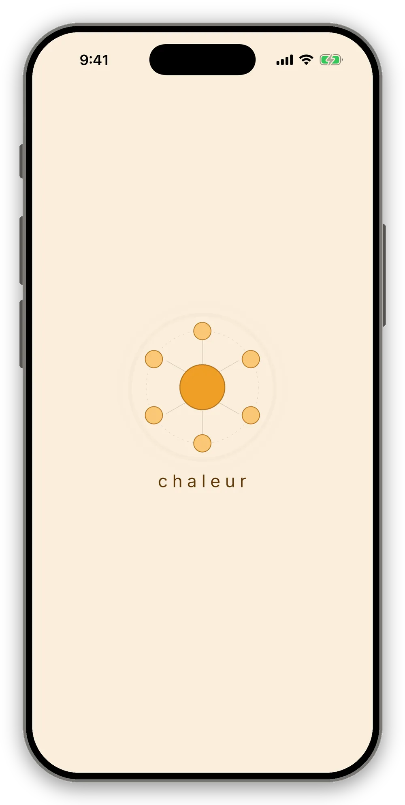
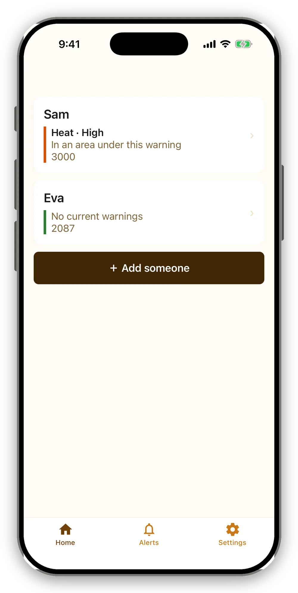
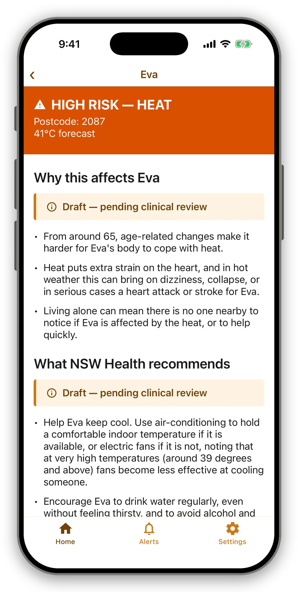
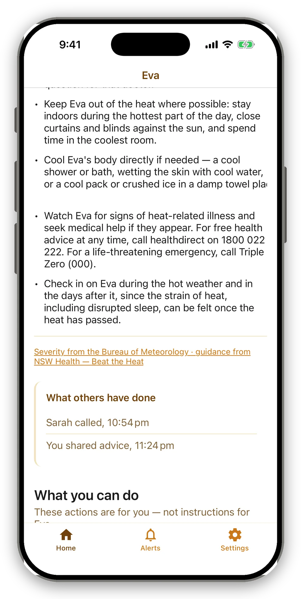
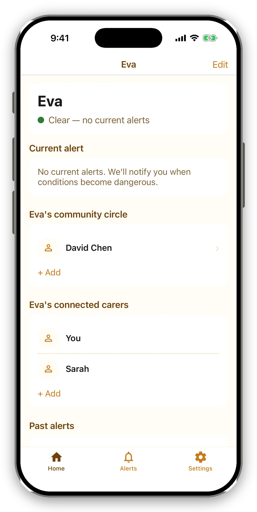
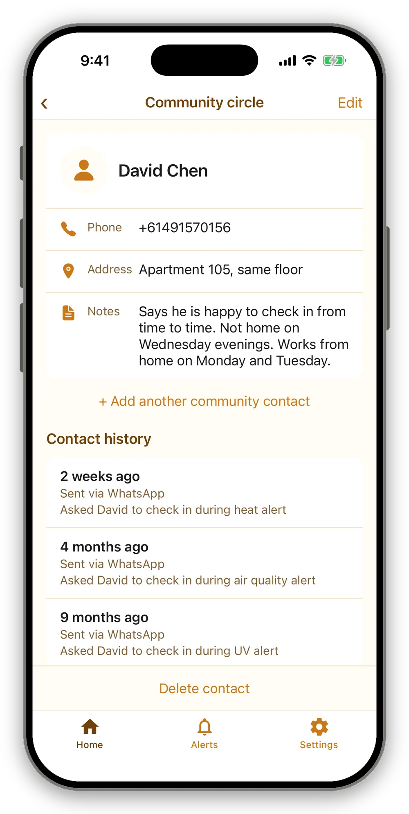

The prototype in action
A short walk through the alert experience, captured from the working prototype.
Demonstration mode. Every person and detail shown here is fictional.

chaleur on launch.

The home screen lists everyone a carer looks after and flags who is at risk today.

Each alert explains in plain language why conditions are dangerous for that person, with every section marked draft, pending clinical review.

When more than one person shares the care, the app shows what's already been done, so help isn't duplicated.

Each person's overview gathers current status, their community circle and past alerts in one place.

A community contact's details and a history of past check-ins.